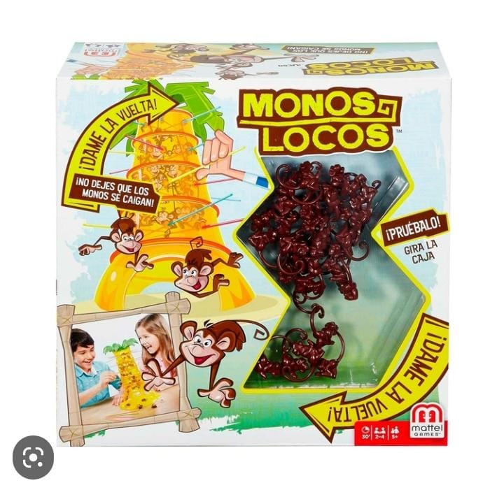
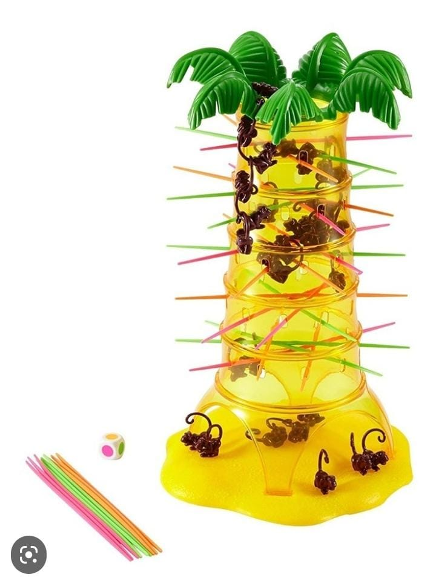
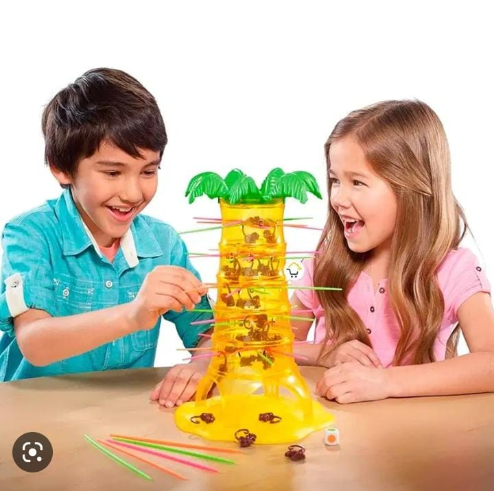

este juego es considerado un clasico mundial

La base del juego es ir retirando unos palillos, en los cuales están colgados
unas figuras de monitos (Monos Locos)
y conseguir derrumbar el menor número posible de ellos.

Al final, quien haya tumbado menos monos gana la partida.